Yoda
Do or not there is not try
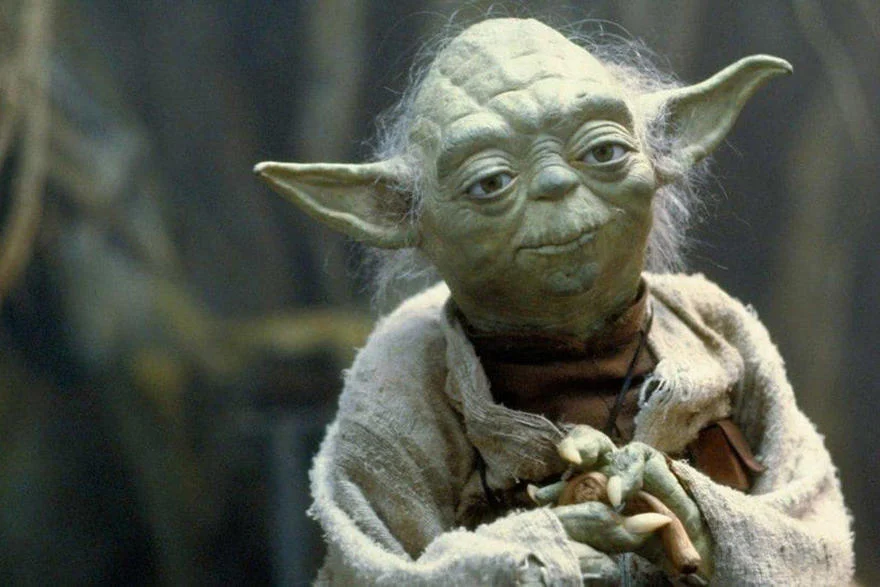Curieuse petite créature verte aux grandes oreilles, âgée de plusieurs centaines d'années, il est le plus puissant, le plus sage et le plus expérimenté de tous les Jedi. Cet extraterrestre qui parle à l'envers est un personnage majeur de la saga. Ce maître Jedi a formé pendant plus de 800 ans les chevaliers Jedi. Pressentant le danger potentiel, c'est lui qui, en qualité de chef de l'ordre Jedi, s'est opposé à ce qu'Anakin suive la formation de chevalier Jedi malgré l'instance de Qui-Gon Jinn. Cependant, il revient sur sa décision à la mort de Qui-Gon Jinn et confie selon les dernières volontés du maître Jedi, la formation du jeune Anakin à Obi-Wan Kenobi. Lorsque la République est renversée et presque tous les Jedi éliminés, Yoda se réfugie et s'exile sur Dagobah, une planète sauvage de la Galaxie où il apprend le secret de l'immortalité. Il trouve sur son chemin Luke Skywalker, guidé par le fantôme d'Obi-Wan Kenobi, et le met à l'épreuve avant d'accepter de l'initier au pouvoir de la Force. Peu de temps avant sa mort à l'âge de 900 ans, Yoda révèle son passé à Luke Skywalker et lui confirme que Dark Vador est bel et bien son père et qu'il existe un autre Skywalker. Bien qu'il soit mort de vieillesse, Yoda vit dans la Force en tant que fantôme, technique qu'il a apprise de Qui-Gon Jinn.
PADMÉ AMIDALA
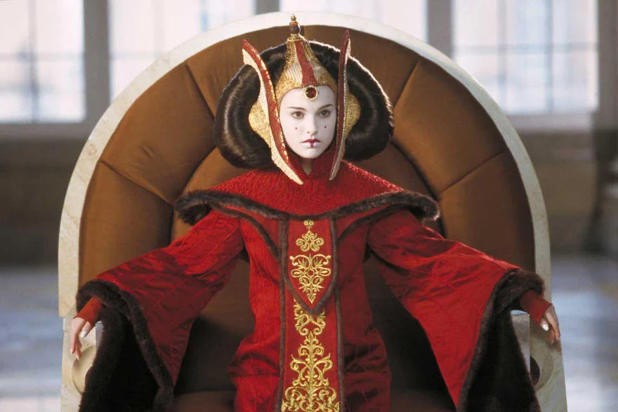Intelligente et courageuse, elle est élue à l'âge de 14 ans reine de la planète Naboo, puis elle en devient également la sénatrice presque dix ans après. Elle entretient une relation amoureuse interdite avec Anakin Skywalker, le chevalier Jedi chargé de la protéger des attaques de la Confédération. Mariée secrètement avec celui-ci, elle meurt tragiquement en donnant naissance à leurs jumeaux, Luke et Leia. Personnage politique de premier plan, elle joue un rôle majeur dans la guerre des clones et c'est elle qui, juste avant sa mort, organise la rébellion en vue de renverser l'Empire dirigé par Palpati&ne. Le personnage est interprété pour la première fois par l'actrice Natalie Portman, âgée de 16 ans seulement à l'époque. Grâce au succès du film «Star Wars, épisode I : La Menace fantôme», sorti en 1999, la jeune comédienne américaine accède à la notoriété internationale.
R2D2
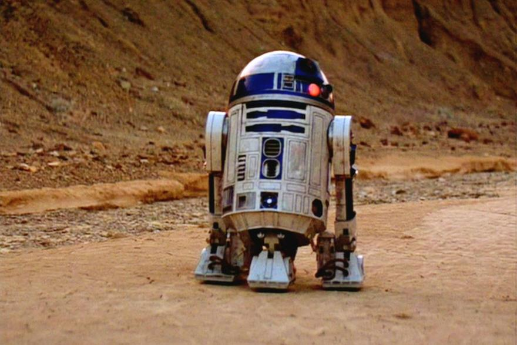Personnage iconique de Star Wars, ce petit droïde astromécano a été d'abord au service de la reine Amidala avant de devenir l'un des compagnons d'aventures d'Anakin puis de Luke Skywalker. Mécanicien de vaisseau spatial et assistant de pilote de chasse, il est animé d'un caractère bien trempé et s'exprime par des sifflements et des signaux électroniques, notamment lorsqu'il s'agit d'afficher son mécontentement. Doté de nombreux gadgets et d'accessoires divers, ce robuste et courageux robot est toujours prêt à entrer en action pour tirer ses amis de situations périlleuses. En semi-retraite depuis la chute de l'Empire, il continue néanmoins à jouer même en mode veille, un rôle au sein de la Rébellion grâce à sa vaste mémoire. Nouant une amitié indéfectible et incongrue avec l'androïde C-3PO, il forme avec celui-ci, un duo inséparable et amusant.
C3PO
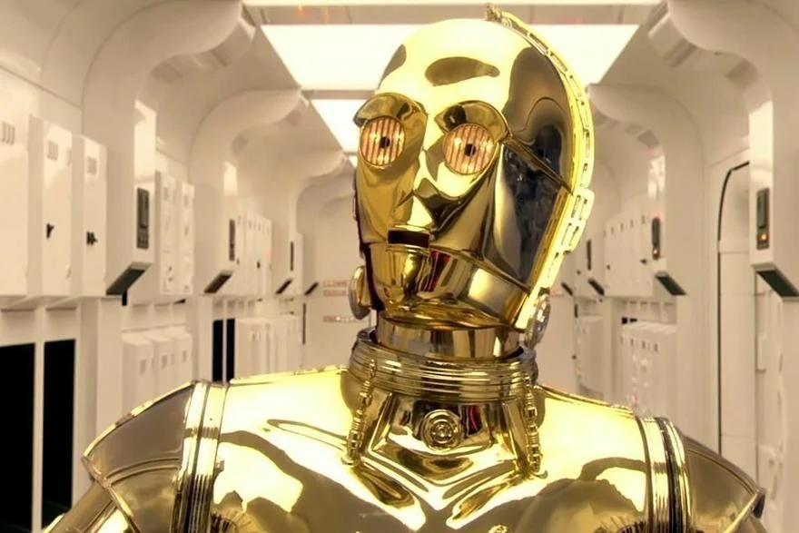Autre protagoniste emblématique de la saga, cet androïde de protocole est le compère de R2-D2, les deux sont un peu les «Laurel et Hardy du futur». Très bavard, cet humanoïde maîtrise plus de six millions de formes de communication. Assemblé à partir de pièces détachées de récupération, il a été construit par Anakin Skywalker, à l'origine pour aider sa mère dans ses tâches quotidiennes. Initialement dépourvu de protection extérieure, il a reçu, après le départ d'Anakin parti suivre son entrainement de Jedi, une carcasse de métal gris, puis a revêtu une armure dorée au moment de son entrée au service de la sénatrice Padmé Amidala. Présent avec R2-D2 dans la quasi-totalité des films Star Wars, il participe à presque tous les moments marquants de la Galaxie et est impliqué dans la plupart des nombreuses batailles épiques. Une fois l'Empire renversé, C-3PO se met au service de Leia Organa, cheffe d'un réseau d'espionnage de la Résistance, pour combattre le Premier Ordre. Ses talents de traducteur lui permettent de diriger et de gérer les informations fournies par son équipe de droïdes espions envoyés sur le terrain.
QUI-GON JINN
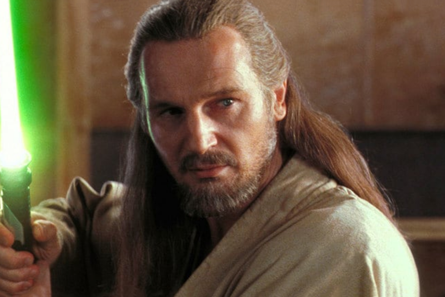JAR JAR BINKS
Formé très jeune en tant que Jedi par le comte Dooku, il obtient rapidement le rang de Maître Jedi et devient l'un des meilleurs que l'ordre Jedi ait connu. En compagnie de son apprenti Obi-Wan Kenobi et de la reine Amidala, ce valeureux et anticonformiste maître Jedi découvre sur Tatooine, un jeune esclave du nom d'Anakin Skywalker, qui réagit à la Force. Percevant le formidable potentiel du garçon, il l'affranchit et le présente directement aux membres du Conseil Jedi afin de lui permettre d'entamer son entrainement de chevalier Jedi, mais ceux-ci s'opposent à cette idée, jugeant Anakin trop vieux et trop instable émotionnellement pour suivre cette voie. Après ce refus, Qui-Gon Jinn accompagné de son apprenti Obi-Wan Kenobi, sont de retour sur Naboo où ils sont confrontés à nouveau à Dark Maul, un seigneur Sith redoutable. Cette nouvelle confrontation constitue l'un des duels les plus épiques de la saga. Au cours de l'affrontement, Qui-Gon Jinn est blessé mortellement par le seigneur Sith qui succombe lui-aussi sous les coups d'Obi-Wan Kenobi. Avant de mourir, le maître Jedi fait promettre à son apprenti de prendre en charge l'entrainement d'Anakin Skywalker. Rendant son dernier souffle, Qui-Gon Jinn devient alors un esprit de la Force, pouvant désormais à travers elle, communiquer avec les vivants dont Yoda, Obi-Wan Kenobi ou plus tard la jeune Rey. Il est interprété à l'écran par l'acteur américano-britannique Liam Neeson.
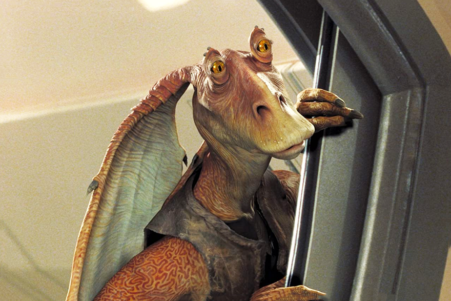Appartenant à l'une des deux espèces de Gungan, créatures amphibies originaires des marais de la planète Naboo, il est sans doute le personnage de Star Wars le plus gaffeur, voire le plus grotesque pour certains. Paria sauvé par Qui-Gon Jinn et Obi-Wan Kenobi, il se joint à eux pour participer à la bataille visant à défendre sa planète et son peuple contre l'invasion de la Fédération du Commerce. Après cette bataille victorieuse au cours de laquelle il a combattu en qualité de général de la Grande Armée Gungan, il fait son entrée dans le monde politique et diplomatique où il devient le délégué de la sénatrice Amidala, avant d'être élu sénateur de Naboo à la mort de celle-ci. Mais doté d'un caractère honnête et naïf, Jar Jar Binks se fait facilement manipuler par les politiciens peu vertueux, et la Galaxie prend un nouveau tournant lorsqu'il propose au vote une motion de censure accordant les pleins pouvoirs au chancelier Palpatine, donnant ainsi naissance à l'Empire galactique et déclenchant la guerre des clones. C'est au cours des funérailles de son amie Padmé Amidala sur Naboo qu'il est apparu en public pour la dernière fois.
OBI-WAN KENOBI
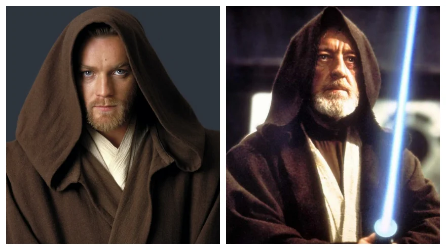Brillant maître Jedi, il fait partie des personnages principaux de l'univers Star Wars. Obi-Wan Kenobi est d'abord l'élève de maître Yoda puis est formé par l'illustre maître Jedi Qui-Gon Jinn. Par la suite, il devient le mentor de Luke Skywalker dans la trilogie originale de Star Wars et le maître d'Anakin Skywalker dans la prélogie de la saga. Malgré le lien très fort qui l'unit à son apprenti, il ne peut pas éviter à Anakin de passer du côté obscur de la Force en devenant Dark Vador. A l'époque de l'Empire galactique, il vit exilé et caché sur Tatooine, sous le nom de Ben Kenobi. Veillant sur Luke, le fils d'Anakin Skywalker, il l'initie à la Force, peu de temps avant de se faire tuer par Dark Vador, son ancien élève, à bord de l'Etoile de la mort, une station spatiale en forme de lune. Vivant toujours à travers la Force, il continue néanmoins de guider et de conseiller Luke Skywalker dans sa quête en apparaissant sous la forme de spectre. Le personnage est interprété dans sa jeunesse par l'acteur écossais Ewan McGregor, et est joué dans la seconde trilogie, au moment où il est âgé, par le célèbre comédien britannique Alec Guinness.
BOBA ET JANGO FETT
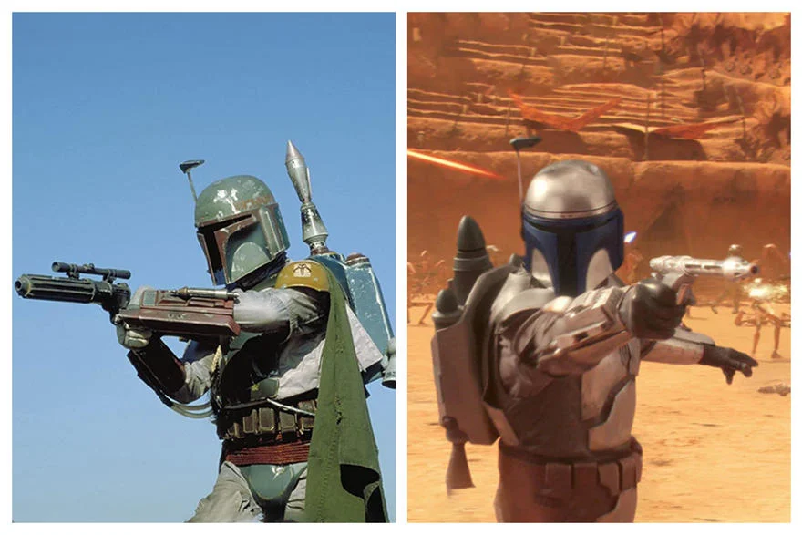Dans la Galaxie, ils sont connus pour être de redoutables et légendaires chasseurs de primes traquant les criminels. Boba Fett (à gauche) est le clone génétique de son père Jango (à droite), un Mandalorien qui a servi de modèle génétique aux soldats clones de la République galactique avant d'être recruté par Dark Tyranus pour être celui de la grande armée de la République. Excellent chasseur de primes et habile tireur d'élite, Jango est protégé par une armure mandalorienne et équipé d'un arsenal spécial comprenant un lanceur de corde, un lance missile ainsi qu'un lance flammes miniature. Mais au cours d'une bataille qui oppose les forces séparatistes et les Jedi sur Géonosis, il meurt décapité par le sabre laser du maître Jedi Mace Windu, sous les yeux de son fils Boba, âgé de 10 ans. Celui-ci jure alors de le venger, nourrissant une haine tenace envers les Jedi. Héritant du vaisseau ainsi que de l'armure et des nombreuses armes de son père, Boba Fett reprend le flambeau paternel. Une fois adulte, sa grande habilité dans le maniement des armes et la traque font de lui un mercenaire idéal pour les basses besognes de l'Empire aussi bien que celles du milieu criminel. D'ailleurs dans «L'Empire contre-attaque», il est celui qui pourchasse Luke Skywalker et ses amis pour le compte de Dark Vador, et celui aussi, qui capture Han Solo avant de le remettre entre les mains de Jabba le Hutt pour toucher la récompense promise.
SHEEV PALPATINE / DARK SIDIOUS
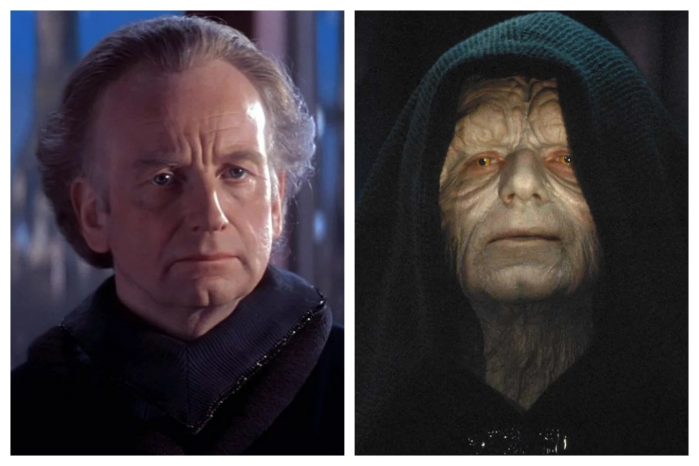Successivement sénateur de Naboo, chancelier suprême de la République galactique puis empereur, Sheev Palpatine est en réalité un seigneur Sith puissant et diabolique dénommé Dark Sidious. Principal antagoniste de l'univers Star Wars, ce politicien à la double identité a réussi grâce à l'aide de ses apprentis Sith, Dark Maul et Dark Tyranus, à restaurer l'ordre des Sith et a détruire celui des Jedi. Avec la chute de la République et l'avènement de l'Empire, il peut désormais gouverner seul sur l'ensemble de la Galaxie en faisant régner la peur et la terreur, même s'il doit lutter contre la Rébellion et traquer les rares Jedi survivants. Maître extrêmement doué au sabre laser et fin tacticien, il est doté d'une intelligence machiavélique. C'est lui qui a habilement poussé Anakin Skywalker vers le côté obscur de la Force et l'a pris comme apprenti en tant que Dark Vador. Et c'est lui encore qui va chercher plus tard à remplacer Dark Vador par son fils, Luke Skywalker. Mais cette tentative se retourne finalement contre Palpatine puisque Dark Vador renonce au côté obscur en le tuant, se sacrifiant pour protéger Luke Skywalker, son fils. Ressuscité et avide de vengeance, Palpatine parvient à revenir au pouvoir grâce à l'émergence du Premier Ordre qui vise à la destruction de la Nouvelle République née sur les ruines de l'Empire. Dirigeant le Premier Ordre à travers le leader suprême Snoke, clone crée et manipulé entièrement par lui, il séduit le jeune Ben Solo qui se met à son service et se range du côté obscur de la Force sous le nom de Kylo Ren. Lors de la bataille d'Exegol, Palpatine/Dark Sidious est finalement tué par sa petite-fille, Rey, qui a retourné son propre pouvoir contre lui, soutenue et aidée par l'ensemble des esprits Jedi. L'acteur britannique Ian McDiarmid a connu la notoriété mondiale grâce à son interprétation de Palpatine/Dark Sidious dans l'ensemble des trois trilogies Star Wars.
LUKE SKYWALKER
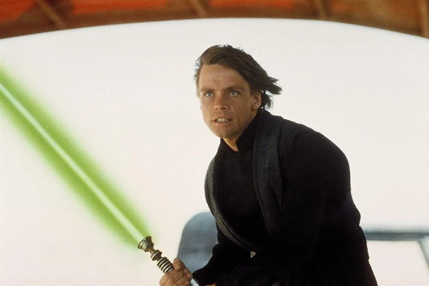Interprété par Mark Hamill, il est le héros de la première trilogie. Fils d'Anakin Skywalker et de Padmé Amidala, il est l'un des plus grands Jedi de la Galaxie et est celui qui ramène l'équilibre de la Force. Elevé modestement par un oncle et une tante dans une ferme sur Tatooine, il possède très jeune les même qualités que son père - à savoir le goût pour la robotique et le pilotage mais surtout une grande présence de la Force en lui. Entraîné par le Maître Jedi Obi-Wan Kenobi, Luke Skywalker apprend par la suite à maîtriser la Force avec Yoda et devient un héros de la rébellion. Au cours de ses aventures pour combattre l'empire du mal et mettre fin à la tyrannie des Sith, il est accompagné et aidé par ses amis : la princesse Leia, Han Solo, Chewbacca et les droïdes R2-D2 et C-3PO. C'est au cours de ses péripéties qu'il découvre la vérité sur sa filiation et l'existence de sa sœur jumelle, Leia. Trois décennies plus tard, on le retrouve dans «le Réveil de la Force», où il vit exilé et reclus sur une île déserte, après son échec de réforme de l'ordre Jedi, ignorant les appels à l'aide de la Galaxie. Mais dans le film «Les derniers Jedi», épisode VIII de la saga, sa solitude est interrompue par l'arrivée de la jeune Rey à laquelle il accepte de donner finalement quelques enseignements, après avoir longtemps refusé. Il participe une dernière fois à la lutte entre le bien et le mal en affrontant Kylo Ren, son ancien élève devenu depuis le leader suprême du Premier Ordre. Profondément épuisé par ce duel à distance, il disparaît alors, son corps s'évanouissant en rejoignant la Force.
LEIA ORGANA
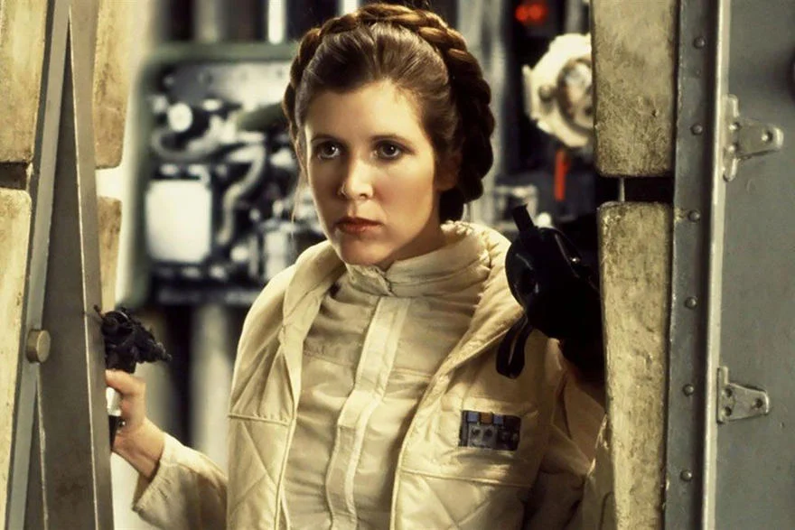Fille de Padmé Amidala et d'Anakin Skywalker, sœur jumelle cachée de Luke Skywalker, elle est élue à l'âge de 18 ans, sénatrice d'Alderaan au début de la saga, mais elle rejoint ensuite les rangs de l'alliance rebelle pour en devenir finalement l'un des plus grands dirigeants. Intrépide et frondeuse, elle n'hésite pas à prendre part elle-même aux combats et participe à la destruction de la première et la seconde Etoile de la mort, renversant la tyrannie de l'Empire et donnant naissance à la Nouvelle République. Elle découvre enfin que Luke Skywalker est son frère jumeau. Par ailleurs, elle entretient une liaison amoureuse avec Han Solo avant de finalement se marier avec celui-ci. Ensemble, ils ont un enfant, Ben Solo, qui plus tard chutera du côté obscur de la Force sous le nom de Kylo Ren. Trente ans plus tard sous la Nouvelle République, elle dirige la Résistance en qualité de générale et lutte contre le Premier Ordre du leader suprême Snoke depuis son quartier général basé sur la planète D'Qar. Le personnage est interprété dans la première trilogie originale et la troisième trilogie de la saga par la comédienne Carrie Fisher, disparue en 2016.
voir plus ...